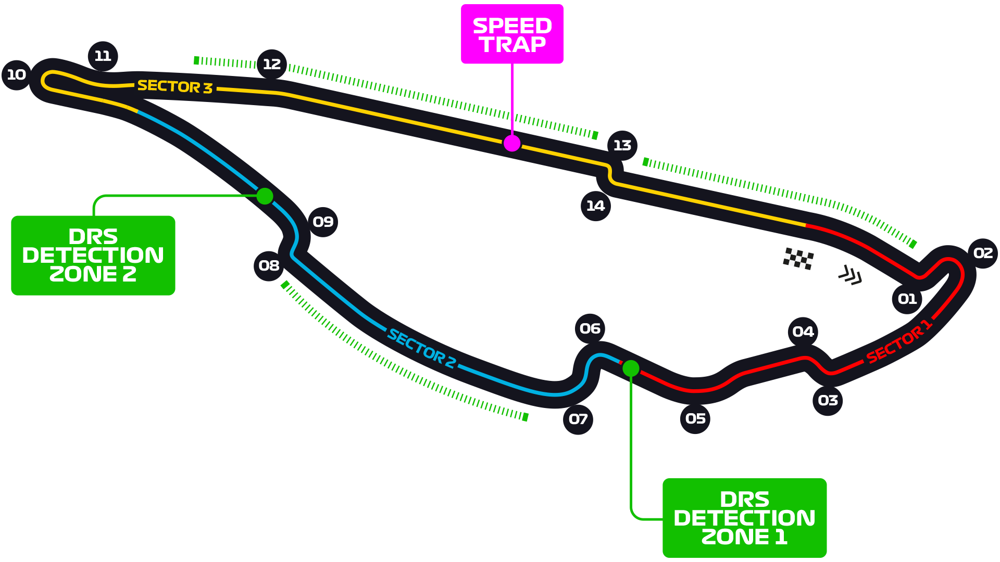

Egy tipikus versenypálya általános jellemzője a rajt-célegyenes, amelyen felsorakoznak a versenyzők a starthoz, és ahol a kockás zászlóval leintik a versenyt. A célegyenes nem feltétlenül egyenes, előfordul, hogy enyhe íve van, mint például Monacóban. Spa-Francorchampsban is volt enyhe íve a célegyenesnek, de a 2007-es átépítések során teljesen egyenes lett. A bokszutca, ahova a versenyzők kiállnak a futam alatt gumicserére, rövid karbantartásra vagy régebben üzemanyagtöltésre (ezt jelenleg biztonsági okokból nem engedélyezik), általában a célegyenes mentén helyezkedik el. A pálya többi része széles körben változik; a legtöbb versenypályán az óramutató járásával megegyezően haladnak a versenyzők
A Formula–1 ausztrál nagydíj a Formula–1 egyik nagydíja, melyet 1985 óta rendeznek meg évente. Az első 11 évben Adelaide adott helyszínt a futamoknak, 1996 óta pedig a melbourne-i Albert Parkban rendezik meg a versenyt. Az adelaide-i versenyek idényzárók voltak, két alkalommal dőlt el rajtuk az egyéni világbajnoki cím: 1986-ban Alain Prost javára a Williams pilótáival szemben, 1994-ben Michael Schumacher javára Damon Hill-lel szemben. A melbourne-i futamok viszont többnyire szezonnyitók, így az utóbbi években a legtöbb pilóta itt futotta első versenyét.

Az első bahreini nagydíjat 2004-ben rendezték a Bahrain International Circuiton, Szahírban. Mint az összes új pályát (maláj nagydíj, kínai nagydíj, vagy a török nagydíj), ezt is a német Hermann Tilke tervezte. A pálya a sivatag közepén épült, az autóknak így problémáik lehetnek a nagy hőséggel, vagy a homokkal. A nagydíj dobogóján rózsavízzel ünnepelnek a versenyzők a pezsgő helyett, mivel az arab országban tilos alkoholtartalmú italt fogyasztani. A száraz verseny szinte garantált, hiszen itt egy évben összesen 3-5 napon esik.

A Formula–1 vietnámi nagydíjat 2020-tól rendezték volna meg a Hanoi Street Circuiton.[1] A 2020 elején kitört koronavírus-világjárvány miatt a 2020-as szezon első futamát törölték, majd további három futamot elhalasztottak (köztük a vietnámi versenyt is).[2] A későbbi, átalakított naptárba nem került be, így a vietnámi nagydíj csak 2021-ben mutatkozik be.

Shanghai International Circuit 2004 óta itt rendezték a Formula–1-es kínai nagydíjat. A pályát, amely Shanghaitól nem messze található, a német Hermann Tilke tervezte. Különlegessége a "csigakanyar", mely a legjobban egy csiga házára emlékeztet, és a vége felé egyre szűkebb a kanyarív.
A Circuit Zandvoort (2017-ig Circuit Park Zandvoort) a közvetlenül az Északi-tenger partján, a holland Zandvoort település mellett található homokos tengerparti dűnék között elhelyezkedő versenypálya, amelyen 1952-től 1985-ig harmincszor rendeztek Formula–1-es versenyt. 2021-től 36 év után újra visszatér ide a mezőny.
A Baku City Circuit (azeri betűkkel: Bakı Şəhər Halqası) egy Formula–1-es versenypálya Bakuban, amely 2016-ban a Forma-1-es európai nagydíjnak adott otthont, 2017-től pedig az azeri nagydíjat rendezik itt.

A Circuit de Catalunya egy versenypálya, mely Montmelóban fekszik, Barcelonától nem messze északra, Katalóniában. Építése előtt a spanyol nagydíjat Jerezben rendezték. A pályát 1991-ben nyitották meg, és még ebben a hónapban megrendezték a Forma–1-es spanyol nagydíjat.

A Circuit de Monaco városi pálya Monaco Monte-Carlo és La Condamine városrészein vezet keresztül, a Forma–1-es verseny monacói nagydíjára. A város számos utcáját lezárják, a közlekedési táblákat, és a virágágyásokat eltüntetik. Felállítják az ideiglenes boxutcát, a kerítéseket, a kerékvetőket és a nézőtereket, ezeken egyszerre 100 000 ember tud elférni. Az így kialakított pálya 3,340 km hosszú. A miniállam 2 km²-es területének szinte egészét bejárja a pálya. Több, különféle kanyar található rajta, mint pl. a hajtűkanyar Fairmont Hotelnél (egykori Loews Hotel), a Forma-1-es pályák leglassúbb kanyarja. Emellett nevezetes még a versenypálya hosszú alagútjáról, és egy sikán is található rajta, nem sokkal az alagútkijárat után.

A Circuit Gilles Villeneuve egy igen tempós motorsport-versenypálya a kanadai Montréal városában, mely a kanadai Formula–1-es versenyzőről, Gilles Villeneuveről kapta nevét. A városi pályán rendezik meg évente a Formula–1 kanadai nagydíjat. A pálya a festői Île Notre-Dame szigeten található, melyen ha nem rendeznek éppen valamilyen versenyt, normális közútnak számít. Hossza 4,361 kilométer, és az óra járásával megegyezően fut. A sok egyenessel teli pálya egyik különlegessége a célegyenes előtti sikán mellett található Bajnokok fala (Wall of Champions), aminek 1999-ben a három világbajnok Damon Hill, Michael Schumacher és Jacques Villeneuve is nekiütközött, és mindhárman feladni kényszerültek a versenyt. A falon a "Bienvenue au Québec" felirat látható, mely magyarul "Üdvözöljük Québecben"-t jelent. A
A Circuit Paul Ricard egy versenypálya Franciaországban, Le Castelletben, Marseille-tól 39 km-re keletre. 1971-től 1975-ig a páratlan, 1976-tól 1982-ig a páros években, 1983-ban, 1985-től 1990-ig, és 2018-tól[1] itt rendezik a Formula–1-es világbajnokság francia nagydíját.

A Red Bull Ring (eredeti neve Österreichring, 1997–2003 között A1-Ring) egy osztrák versenypálya Stájerországban. Maga a pálya Spielberg községhez tartozó területen fekszik, de bejáratai Zeltweg község közvetlen közelében vannak, ezért gyakran „zeltwegi pályaként” említik. 1997 és 2003 között rendeztek itt F1-es futamot. A pályát 2011-ben a Red Bull energiaital gyártó finanszírozásával felújították, és ismét alkalmassá tették a Forma 1-es versenyek megrendezésére, a 2014-es szezontól ismét szerepel a versenynaptárban.
A brit nagydíjat 1950 óta évente megszakítás nélkül rendezik az Egyesült Királyságban. Az olasz nagydíj mellett az egyetlen, melyet a Formula–1 alapítása óta megszakítás nélkül rendeznek. 1950-től 1954-ig a Silverstone-i pályán rendezték meg a versenyeket. 1955 és 1963 között a Liverpool melletti Aintree Racecourse adott otthont felváltva Silverstone-nal az szigetország nagydíjának. 1964 és 1986 között a Londontól nem messze fekvő Brands Hatchben került szintén Silverstone-nal felváltva megrendezésre a brit nagydíj. 1987 óta rendezik ismét a futamokat Silverstone-ban. 2008. július 4-én Bernie Ecclestone és Max Mosley (az FIA elnöke) bejelentette, hogy 2010-től Donington Park rendezi meg a brit nagydíjat,[1] de a verseny maradt a modernizált silverstone-i pályán. 2020-ban a COVID-19 világjárvány miatt zárt kapuk mögött, nézők nélkül rendezték meg a versenyhétvégét,[2] továbbá ebben az évben a felforgatott versenynaptár miatt egy második futamot is rendeztek ugyanitt egy héttel az első után 70. évforduló nagydíj néven, megünnepelvén a Formula–1 70 éves fennállását.

A magyar nagydíj a Formula–1 egyik versenye, amelyet 1986 óta – megszakítás nélkül – rendeznek meg a Budapest melletti Mogyoród község külterületén található Hungaroring versenypályán. Előtte egy alkalommal, 1936-ban rendeztek Grand Prix versenyt a Népligetben, mely még nem volt hivatalos világbajnoki futam és nem is osztottak a verseny végén pontokat. Kisebb átalakítások után a pálya 2003-ban nyerte el jelenlegi vonalvezetését, amelynek hossza 4,381 kilométer. A verseny hossza 70 kör, vagyis a pilótáknak 306,67 km-t kell teljesíteniük, amely távot körülbelül 110 perc alatt lehet megtenni. A kétórás időhatár életbe léptetésére volt már szükség, 1986-ban egy körrel rövidebb volt a futam. Az egyetlen esős körülmények között futott verseny a 2006-os volt. Az időmérő edzésen és (1 perc 13,447), a versenyen futott (1 perc 16,627) legjobb köridő is Lewis Hamilton nevéhez fűződik. A legtöbb pole pozíciót (7) a hétszeres világbajnok Michael Schumacher szerezte, míg a legtöbb győzelmet (8) Lewis Hamilton számlálja, Schumacher négyszer, Ayrton Senna háromszor nyert a magyar nagydíjon. Szűk pályaszakaszai és éles kanyarjai miatt nehéz az előzés, ezért a Hungaroringet a monacói városi pályához szokták hasonlítani.

Az első belga nagydíjat már 1950 óta rendezik meg kisebb megszakításokkal, összesen eddig 51 alkalommal. A nagydíjat jelenleg az Ardennek hegységben fekvő Spa-Francorchampsi pályán rendezik, mely Stavelot város egyik kerülete. 1970-ig 18 alkalommal rendezték meg a nagydíjat. A nagy sebességű pályán 1969-ben nem rendezhettek versenyt, mert túl gyorsnak és veszélyesnek találták. 1970-ben a pályát átépítették, és a pálya hossza 7 kilométerre rövidült. 1983-ban ismét ezen a pályán rendezték a belga nagydíjakat, 1971 és 1983 között Zolder és Nivelles-Baulers adott otthont a futamoknak.
Az Autodromo Nazionale Monza egy olaszországi versenypálya. Az 5 kilométer hosszú versenypályán, a Monzai Királyi Parkban, Milánótól északkeletre 1922. szeptember 3-án rendezték meg a nyitóversenyt. A versenypályán autó és motorversenyeket rendeznek. 1950 óta rendezik meg itt mindössze egyetlen éves megszakítással a Formula–1 olasz nagydíjat. 1980-ban a pálya átépítése miatt az olasz nagydíjat egy évre az imolai Autodromo Enzo e Dino Ferrari versenypályára helyezték át.
A szingapúri nagydíj volt az első éjszaka rendezett verseny, melyhez a fényeket 1500 lámpa és 24 generátor biztosította. A nagydíjat először 2008-ban rendezték meg a Formula–1-ben, melyet Szingapúr városi pályáján, a Singapore Street Circuit-en rendeztek. A szingapúri nagydíjat 1966 és 1973 között is megrendezték a Formula–2-ben.
A Sochi Autodrom , korábban Sochi International Street Circuit, és Sochi Olympic Park Circuit, egy utcai jellegű Formula–1-es versenypálya Oroszországban, Szocsiban. A pálya a 2014-es téli olimpiának helyszínt adó létesítmények környezetében helyezkedik el. A pálya karakterisztikája és elhelyezkedése leginkább a Montréal-i Formula–1-es pályára hasonlít. A pálya 2014-től ad otthont az orosz nagydíjnak.

Az első japán nagydíjat (Fuji Television Japanese Grand Prix) 1976-ban rendezték meg a Fuji Speedwayen, mely Sizuoka prefektúrában található. A versenyeket 1987-től 2006-ig minden évben a Szuzukában rendezték meg. 1994-ben és 1995-ben Japánban két futamot rendeztek egy évben, hiszen a japán mellett a csendes-óceáni nagydíjat is ebben az országban rendezték, az Tanaka International Circuiton, Aidában. 2007-ben és 2008-ban ismét Fudzsiban rendezték meg a japán nagydíjat, majd 2009-től újra Szuzuka rendezi a nagydíjat.
A Formula–1 amerikai nagydíjat 1959-ben rendezték meg először. 1959-ben Sebring, 1960-ban Riverside, 1961-től 1975-ig Watkins Glen, 1984-ben Dallas 1985-től 1988-ig Detroit, 1989-től 1991-ig Phoenix, 2000-től 2007-ig pedig Indianapolis tartotta a versenyt. 2012-ben ismét volt Amerikai Nagydíj, az austini pályán. A legnagyobb baleset 1973-ban történt Watkins Glenben: François Cevert az időmérőn balesetet szenvedett és elhunyt. Jackie Stewart csapattársa balesete miatt bejelentette visszavonulását. Ez lett volna a 100. világbajnoki versenye.

A mexikói nagydíjat 1962-től 1970-ig, majd 1986-tól 1992-ig rendezték a mexikóvárosi Autódromo Hermanos Rodríguez versenypályán. 2015-ben, 23 év után újra visszatért ide a mezőny.

Az első brazil nagydíjat a Formula–1-ben 1973-ban rendezték az Autódromo José Carlos Pace versenypályán, 12 km-re São Paulo belvárosától, a Parelheiros kerületben, gyakran emlegetik Interlagos néven is. 1977-ig rendeztek itt versenyeket. 1978-ban, és 1981-től 1989-ig az Autódromo Internacional Nelson Piquet (Jacarepagua) versenypályán rendezték meg a brazil nagydíjakat, mely Rio de Janeirótól nem messze található. 1979-ben, 1980-ban és 1990-től napjainkig ismét Interlagosban rendezik a brazil nagydíjat.
A Yas Island Circuit egy 5,5 km (3,4 mérföld) hosszú motorsport-versenypálya Abu-Dzabitól nem messze, az Egyesült Arab Emírségekben. 2009-től ezen a pályán rendezik a Formula–1 abu-dzabi nagydíjat. A pályát a német Hermann Tilke tervezte és az arab Aldar Properties volt a kivitelező.